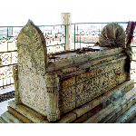
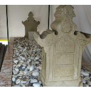
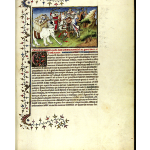

Teori Gujarat
Teori Gujarat adalah salah satu pandangan tentang masuknya Islam ke Indonesia pada abad ke-13 M. Bunyi teori ini bahwa agama Islam pertama kali diperkenalkan di wilayah Indonesia oleh para pedagang dari Gujarat, India. Teori ini dikenal karena dipopulerkan oleh Snouck Hurgronje dan J. Pijnapel.

Makam Maulana Malik Ibrahim

Makam Sultan Malik As-Saleh

Catatan Marco Polo